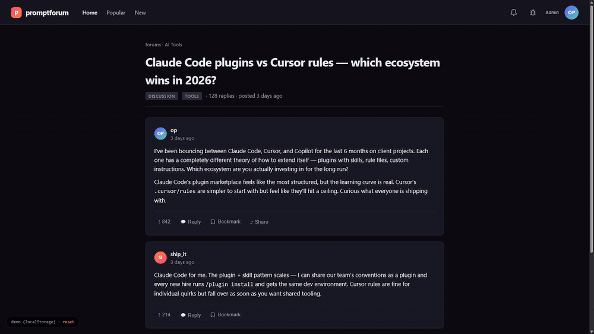

bugkit
AI-friendly bug reports for any project. Users report bugs with full context — URL, element selector, stack trace, viewport, voice transcript. Admins hit one button. Paste into Claude Code or any AI coding agent. Fix ships in minutes.


Who this is for
🛠 Building for a client or boss
Send them the staging link. They click the bug icon, pick the broken element, speak or type what they want. You paste the output into your AI coding agent. Fix ships the same day — exactly how they described it. No more "did they mean the header or the hero?"
🚀 Running a product with users
Users click the bug icon from inside your app. Reports arrive with full context — selector, stack trace, viewport, voice transcript. Paste → AI fixes → user gets notified. Your product improves as fast as you can read reports.
Install — pick your AI agent
/plugin marketplace add bglglzd/bugkit /plugin install bugkit@bglglzd-bugkit /bugkit:install
Install bugkit in this project from https://raw.githubusercontent.com/bglglzd/bugkit/main/INSTALL.md
Install bugkit in this project from https://raw.githubusercontent.com/bglglzd/bugkit/main/INSTALL.md
Install bugkit in this project from https://raw.githubusercontent.com/bglglzd/bugkit/main/INSTALL.md
Paste the full contents of INSTALL.md into your AI chat. Works with Gemini CLI, Aider, Cline, and anything else that accepts a prompt.
How it works
Why this beats a feedback form
| Traditional feedback form | bugkit |
|---|---|
| "Something is broken" | Selector, XPath, HTML, viewport, URL, stack trace, voice transcript |
| Admin reads, asks clarifying questions | Admin pastes to AI, AI already has everything |
| Fix takes days | Fix ships in minutes |
| Format differs per project | Standardized spec — same ritual across all your projects |
| No closed-loop status | Reporter notified at each state change |
| Typing long descriptions is a chore | 🎤 press-to-speak, auto-transcribed |
Voice — free, no keys, works on slow computers
🎤 Mic button next to the description field. Press, speak, transcript streams into the textarea live. Edit if you want, submit.
Default is the browser's Web Speech API — free, no install, no keys. Optional upgrade is local Whisper (whisper.cpp) for offline / Firefox / full privacy — ~150MB one-time model download, CPU-only. Never paid APIs as the default path.
Docs
- SPEC.md — the portable data contract
- recipes/ — 7 sink adapters (DB, GitHub Issues, Telegram, JSONL, email, Slack/Discord, CLI)
- INSTALL.md — universal paste-in prompt
- Example AI context output